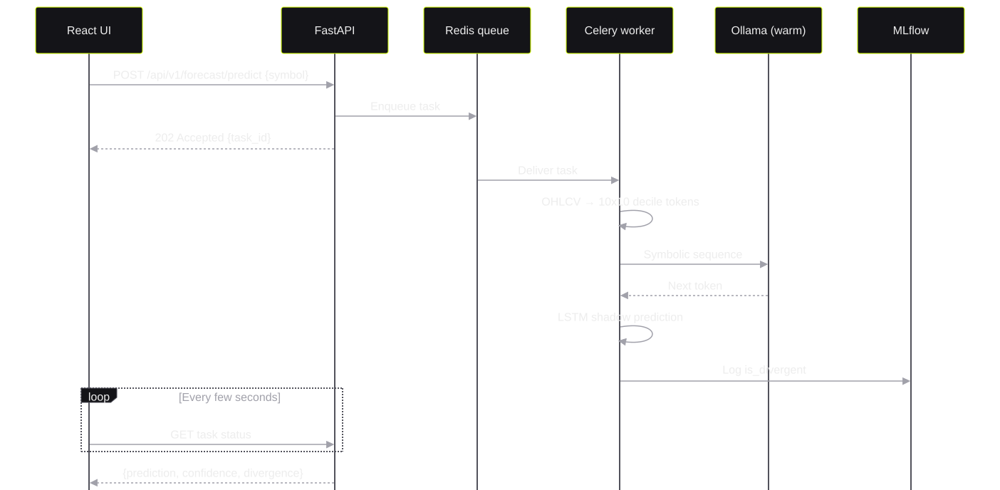

Finwise Scribe
A neuro-symbolic GenAI engine on 4GB of VRAM4GB VRAM'de çalışan neuro-symbolic bir GenAI motoru
*an 8-service system and an open audit of its own gaps**8 servisli bir sistem ve kendi eksiklerini açıkça listeleyen bir denetim*I built an 8-service system in which an LSTM changes price and volume changes into tokens and a LoRA fine-tuned Llama 3 reasons over them. Full inference runs on 4GB of VRAM. Celery, Redis and a warm model removed API timeouts and 20-second cold starts.
8 servisten oluşan bir sistem kurdum: Bir LSTM fiyat ve hacim değişimlerini token'lara çeviriyor, LoRA ile fine-tune ettiğim bir Llama 3 de bu token'lar üzerinden akıl yürütüyor. Inference'ın tamamı 4GB VRAM'de çalışıyor. Celery, Redis ve sürekli bellekte tutulan model sayesinde API zaman aşımları ve 20 saniyelik soğuk başlangıçlar ortadan kalktı.
- rolerol
- Sole engineer: architecture, backend, model serving, MLOps and dashboardProjeyi tek başıma geliştirdim: mimari, backend, model servisi, MLOps ve dashboard
- stackteknolojiler
- FastAPI · Celery · Redis · PostgreSQL · MLflow · Ollama · React · Loki · Grafana · GitHub Actions
1. The problem1. Problem
Standard LLMs do not predict numerical prices reliably. Finwise Scribe does not ask the model for a number. It changes OHLCV data into a 10×10 decile token matrix. For example, a day in the top 10% of price returns and the bottom 10% of volume becomes P_9_V_0.
A LoRA fine-tuned small model then reasons over this symbolic sequence. The goal is market analysis on consumer hardware with 4GB of VRAM.
Standart LLM'ler sayısal fiyat tahmininde güvenilir değil. Finwise Scribe bu yüzden modelden doğrudan bir rakam istemiyor; OHLCV verisini 10×10'luk bir desil token matrisine çeviriyor. Örneğin fiyat getirisi en üst %10'da, hacmi en alt %10'da olan bir gün P_9_V_0 olarak kodlanıyor.
LoRA ile fine-tune edilmiş küçük bir model de bu sembolik dizi üzerinden akıl yürütüyor. Amaç, piyasa analizini 4GB VRAM'li sıradan bir donanımda yapabilmek.
2. Constraints2. Kısıtlar
- 4GB VRAM: Full LLM inference must run on edge hardware.
- Slow inference: One prediction takes 10–30 seconds. The API and the UI must not wait for it.
- Thesis integrity: A wrong number is worse than a missing feature.
- 4GB VRAM: LLM inference'ın tamamı edge donanımda çalışmalı.
- Yavaş inference: Tek bir tahmin 10–30 saniye sürüyor; API'nin ve arayüzün bunu beklememesi gerekiyor.
- Tezin güvenilirliği: Yanlış bir rakam, eksik bir özellikten çok daha zararlı.
3. Architecture3. Mimari
The system has 8 Docker Compose services: FastAPI, Celery, Redis, PostgreSQL, MLflow, Ollama, React and the observability stack. FastAPI returns HTTP 202 with a task_id. Redis sends the task to a Celery worker. The React dashboard polls the task status and shows a progress state.
Sistem 8 Docker Compose servisinden oluşuyor: FastAPI, Celery, Redis, PostgreSQL, MLflow, Ollama, React ve gözlemlenebilirlik katmanı. FastAPI isteği aldığında hemen bir task_id ile HTTP 202 dönüyor, Redis görevi bir Celery worker'ına iletiyor. React dashboard görevin durumunu düzenli aralıklarla sorgulayıp ilerlemeyi gösteriyor.

4. One forecast from start to end4. Bir tahminin baştan sona akışı

Shadow modeShadow mode
A shadow deployment compares the symbolic model with a traditional model. A deterministic LSTM is the control. The small language model is the challenger. When the challenger predicts a sharp reversal and the LSTM does not, MLflow records is_divergent = 1.
Bir shadow deployment, sembolik modeli geleneksel bir modelle yan yana çalıştırıyor. Deterministik bir LSTM referans model, küçük dil modeli ise sınanan model. Küçük model keskin bir dönüş öngördüğünde LSTM öngörmüyorsa MLflow'a is_divergent = 1 kaydı düşülüyor.
5. Key decisions and trade-offs5. Önemli kararlar ve ödünleşimler
| DecisionKarar | Alternative I consideredDeğerlendirdiğim alternatif | ReasonNeden |
|---|---|---|
| Celery and Redis for inferenceInference için Celery ve Redis | Inference inside the API requestInference'ı API isteğinin içinde yapmak | Concurrent inference caused API timeouts. A queue keeps the API non-blocking.Eşzamanlı inference istekleri API'de zaman aşımına yol açıyordu. Kuyruk sayesinde API hiçbir zaman bloklanmıyor. |
| Keep the model in memoryModeli bellekte tutmak | Load the model on demandModeli ihtiyaç anında yüklemek | On-demand loading caused 20-second cold starts. OLLAMA_KEEP_ALIVE removed them.İhtiyaç anında yükleme 20 saniyelik soğuk başlangıçlara neden oluyordu. OLLAMA_KEEP_ALIVE bu sorunu çözdü. |
| Decile tokens instead of pricesFiyat yerine desil token'ları | Ask the model for a numerical priceModelden doğrudan sayısal fiyat istemek | A token is a classification target. The model does not do floating-point arithmetic.Token bir sınıflandırma hedefi; model kayan noktalı aritmetik yapmak zorunda kalmıyor. |
Uvicorn without --reload--reload olmadan Uvicorn | Default development settingsVarsayılan geliştirme ayarları | The reload process caused OS Error 12 memory failures on the small machine.Reload süreci küçük makinede OS Error 12 bellek hatalarına yol açıyordu. |
The correctness passDoğruluk denetimi
I read the prediction and evaluation path from start to end. I looked for places where the system can give a wrong result without an error. I found three bugs:
Tahmin ve değerlendirme akışını baştan sona okudum. Sistemin hiçbir hata vermeden yanlış sonuç üretebileceği noktaları aradım ve üç hata buldum:
- A synthetic data fallback made plausible prices when a provider failed. I removed it. The service now uses real providers only and fails with a clear error.
- A label-mapping bug changed
P_CRASH_V_HIGH(bearish) toBULLISH. The code checked the volume words before the price words. I fixed the order and added tests. - MLflow returns
NaNfor a missing parameter, andNaNis true in Python. Thus a fallback branch never ran. I fixed the check.
- Bir veri sağlayıcısı yanıt vermediğinde sistem gerçekçi görünen sahte fiyatlar üretiyordu. Bu yedeği kaldırdım; servis artık yalnızca gerçek sağlayıcıları kullanıyor ve veri yoksa açık bir hata veriyor.
- Bir etiket eşleme hatası, düşüşü ifade eden
P_CRASH_V_HIGHdeğeriniBULLISHolarak yorumluyordu. Sebebi, kodun hacim ifadelerini fiyat ifadelerinden önce kontrol etmesiydi. Sırayı düzeltip testlerle güvence altına aldım. - MLflow eksik bir parametre için
NaNdöndürüyor veNaNPython'da doğru (truthy) kabul ediliyor. Bu yüzden yedek değeri devreye sokan kod hiç çalışmıyordu. Kontrolü düzelttim.
The README also shows where the shipped code differs from the design. The diagram below shows this gap.
README, yayındaki kodun tasarımdan nerede ayrıldığını da açıkça belirtiyor. Aşağıdaki diyagram bu farkı gösteriyor.

6. Testing and observability6. Test ve gözlemlenebilirlik
- The backend suite has 10 tests. They cover the forecast trigger and poll, the stock lookup and user CRUD. All tests pass.
- The LLM-service suite has 12 tests. They cover the label contract and the NaN fallback. All tests pass.
- CI runs the backend suite against a real PostgreSQL service before each image build.
- MLflow, Loki and Grafana record the shadow-mode metrics and the LLM prompts.
- Backend test paketinde 10 test var; tahmin başlatma ve durum sorgulama, hisse arama ve kullanıcı işlemlerini kapsıyor. Hepsi geçiyor.
- LLM servisi test paketinde 12 test var; etiket sözleşmesini ve NaN yedeğini kapsıyor. Hepsi geçiyor.
- CI, her imaj derlemesinden önce backend testlerini gerçek bir PostgreSQL servisine karşı çalıştırıyor.
- MLflow, Loki ve Grafana shadow mode metriklerini ve LLM'e giden prompt'ları kaydediyor.
7. Results7. Sonuçlar
8. Limitations and next steps8. Sınırlar ve sonraki adımlar
- The project does not claim a trading strategy, backtested returns or accuracy numbers. These belong to the thesis evaluation.
- The deterministic token-only method exists but
predict()does not call it yet. - The divergence check uses a substring test. It is not a statistical test yet.
- Next steps: run the LLM-service tests in CI and use symbolic-ts as the tokenizer.
- Proje bir alım-satım stratejisi, backtest getirisi ya da doğruluk oranı iddia etmiyor; bunlar tezin değerlendirme aşamasının konusu.
- Deterministik, yalnızca token üreten yöntem kodda mevcut; ancak
predict()henüz onu çağırmıyor. - Ayrışma kontrolü şimdilik basit bir metin eşleşmesine dayanıyor, istatistiksel bir test değil.
- Sıradaki adımlar: LLM servisi testlerini CI'a eklemek ve tokenizer olarak symbolic-ts'i kullanmak.
9. Design Q&A9. Tasarım üzerine sorular
Why does the API return HTTP 202?API neden HTTP 202 dönüyor?
One inference takes 10–30 seconds. HTTP 202 tells the client that the server accepted the task. The client then polls with the task_id, and the API stays free for other requests.
Tek bir inference 10–30 saniye sürüyor. HTTP 202, istemciye isteğin kabul edildiğini bildiriyor. İstemci sonucu task_id ile sorguluyor; API de bu sırada başka istekleri karşılamaya devam ediyor.
How did you remove the cold starts?Soğuk başlangıçları nasıl ortadan kaldırdın?
Ollama unloaded the model after a period of no use. The next request waited about 20 seconds for the load. I set OLLAMA_KEEP_ALIVE so that the model stays in memory.
Ollama, bir süre kullanılmayan modeli bellekten çıkarıyordu ve sonraki istek modelin yeniden yüklenmesi için yaklaşık 20 saniye bekliyordu. OLLAMA_KEEP_ALIVE ayarıyla modeli sürekli bellekte tuttum.
Why do you publish the gaps in your own code?Kendi kodundaki eksikleri neden açıkça yazıyorsun?
This is a thesis application. A reader must know which parts are results and which parts are targets. A clear list of gaps also gives me a precise backlog.
Bu bir tez uygulaması; okuyucunun hangi kısımların sonuç, hangilerinin hedef olduğunu bilmesi gerekiyor. Eksiklerin net bir listesi bana aynı zamanda somut bir iş listesi veriyor.
What is shadow mode in this project?Bu projede shadow mode ne işe yarıyor?
The LSTM and the small model run on the same input. Only the comparison is recorded. When the two models disagree on a sharp reversal, MLflow records a divergence flag for later analysis.
LSTM ve küçük model aynı girdiyle çalışıyor, ancak yalnızca karşılaştırma sonucu kaydediliyor. İki model keskin bir dönüş konusunda ayrıştığında MLflow, sonradan incelenmek üzere bir ayrışma işareti düşüyor.